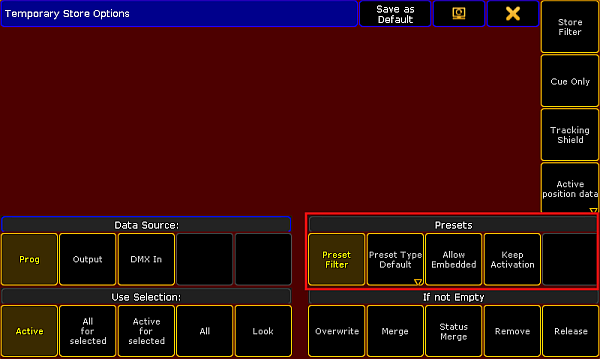
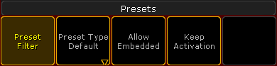

Press and hold Store until the pop-up TemporaryStore Options opens.

Temporary store options
Enable the buttons marked by the red box in the screenshot above.

Presets – store options
To disable the filter, tap Preset Filter.
Important:
Every preset pool – except for the preset pool All – has a filter as a default setting. This filter allows to store the value equivalent to the pool only.
To choose the store option of the preset type, tap Preset Type Default and then toggle between default, selective, global or universal.
Important:
The store option is Preset Type Default by default. This setting falls back on the default store option of a preset pool.
To allow that presets are stored within other presets, tap Allow Embedded.
For more information see Embedded presets.
To take the preset link actively into the programmer after storing the preset, tap Keep Activation.
To keep the previous settings when storing another preset, tap Save as Default in the header of this dialog.
To close the Temporary Store Options, tap in the upper right corner of the pop-up.
Eventually, tap an empty object you would like to store the preset to.